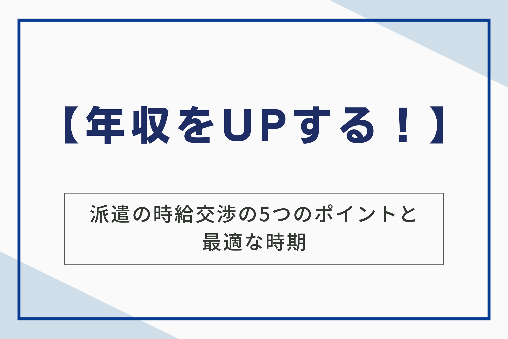
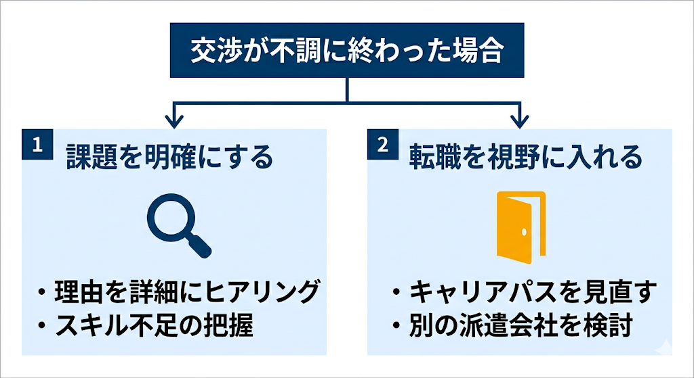

「これだけ業務範囲が広がったのに、時給が据え置きなのは納得がいかない」「周りの相場より低い気がするけれど、言い出したらクビになるかも」と、派遣の時給について不安がある方もおられるのではないでしょうか。
派遣社員にとって、時給交渉は自分の市場価値を正しく評価してもらい、生活の質を向上させるための大切な権利です。しかし、感情的に「上げてほしい」と伝えるだけでは、なかなかよい結果は得られません。成功の鍵は、適切な「タイミング」を見極め、客観的な「根拠」を持って相談することにあります。時給の交渉に適切なタイミングは、以下のとおりです。
- 最適なタイミング①契約更新の1か月前
- 最適なタイミング②新しい業務を任された際
- 最適なタイミング③専門的な資格を取得した際
この記事では、時給交渉の成功を高めるポイント、最適なタイミング、不適切なタイミング、失敗した場合の対策を網羅的に要約して解説します。また、よくある質問も紹介していますので、ぜひ参考にしてください。

派遣の時給交渉の成功率を格段に高める5つのポイント
時給交渉を成功させるには、感情的に訴えるのではなく論理的に話を進める必要があります。以下のポイントを抑えることが確実な近道になります。
ポイント①業務の成果を具体的な数字で可視化する
時給交渉において最も説得力を持つのは、主観的な頑張りではなく客観的な数字です。「一生懸命やっています」と伝えるよりも、「処理件数を1日50件から70件に増やしました」と具体的に提示してください。
具体的な実績を数値化することで、派遣先企業へ価格交渉を行う際の強力な武器となります。作業時間の短縮やミス率の低減など、以前の自分と比較して成長した部分をデータで証明しましょう。目に見える成果を示すことは、プロフェッショナルとしての信頼を築くための第一歩です。
なお、「損せず」派遣の年収を上げるための方法については、こちらの記事で詳しく解説しています。
関連記事：【派遣社員必見】「損せず」年収を上げるための3つの方法
ポイント②市場相場を調べて根拠のある金額を提示する
自分の時給が適切かを判断するには、外部の客観的なデータを知る必要があります。同じ職種や地域での平均時給を調査して、自分の希望が市場から逸脱していないかを確認しましょう。
相場を知ることで、派遣会社に対しても論理的な相談が可能です。闇雲に増額を願うのではなく、根拠にもとづいた適正な金額を提示する姿勢が信頼を生みます。求人サイトで現在の募集案件をいくつかピックアップして、平均値を算出してみる方法も有効です。
ポイント③円滑なコミュニケーションで良好な関係を保つ
交渉は一方的な「要求」ではなく、お互いのメリットを探るための「相談」の場だと捉えてください。派遣会社の担当者と日頃から良好な関係を築いておくと、こちらの意向を最大限に汲み取ってもらいやすくなります。
日頃の感謝を伝えたり、今後のキャリアプランを共有したりして、担当者をあなたの強力な味方にしましょう。良好な人間関係は、条件交渉をスムーズに進めるための最も強力な土台となります。
感情的にならず、お互いに歩み寄れるポイントを探る冷静な姿勢を忘れないでください。担当者との信頼が厚ければ、派遣先企業への打診もより熱意を持って行ってもらえるようになります。
ポイント④契約更新のタイミングを見計らって相談する
時給交渉の切り出しは、契約更新の1か月～1.5か月前が適しています。この時期であれば、派遣先企業の次期予算に反映させやすく、担当者も余裕を持って調整に動けるためです。
直前の申し出は手続きが間に合わなかったり、予算が確定していたりして見送られるリスクが高まります。更新の機会を逃さず、次回の条件について前向きに話し合いましょう。
なお、派遣法3年ルールについては、こちらの記事で詳しく解説しています。
関連記事：派遣法3年ルールとは？例外のケース、キャリアパスの選択肢5つをご紹介！
ポイント⑤キャリア支援に強い派遣会社を味方につける
時給交渉を自分1人で進めるには限界があります。スタッフの年収アップを真剣に考える派遣会社を選び、担当者をプロの交渉人として活用してください。
担当者と一緒にスキルを磨いたり、将来の展望を語り合ったりしながら、二人三脚で条件改善を目指しましょう。適切なサポートがあれば、自分では気づかなかった強みが見つかる場合も珍しくありません。納得のいく報酬を手に入れるために、キャリア支援に力を入れている会社をパートナーに選ぶことが大切です。

派遣時給交渉を切り出すべき最適な3つのタイミング
交渉を成功させるためには、伝える内容と同じくらい伝える時期が大切です。適切な時期を見計らうことで、派遣会社や派遣先企業も予算の調整を検討しやすくなります。
最適なタイミング①契約更新の1か月前
時給交渉を切り出す時期は、契約更新の1か月～1.5か月前が適しています。この時期であれば、派遣先企業の次期予算に反映させやすく、担当者も余裕を持って調整に動けるためです。
直前の申し出は手続きが間に合わず、予算が確定していることを理由に見送られるリスクが高まります。次回の契約条件について、早めに前向きな話し合いの場を設けることが成功への近道となります。
最適なタイミング②新しい業務を任された際
契約時になかった高度な業務やリーダー業務を任されたタイミングは、時給アップの強力な根拠となります。仕事の難易度が上がったことは、自身のスキルが向上した証拠であり、対価を求める正当な理由です。
役割の変化をそのままにせず、評価として形に残す姿勢を大切にしましょう。新しい業務を引き受ける際は、時給の見直しについても相談を検討してください。
最適なタイミング③専門的な資格を取得した際
実務に直結する専門的な資格を取得した瞬間は、自身の市場価値が客観的に高まったことを証明する絶好の機会です。取得した知識や技術を実務に活かせば、業務の質が向上して、企業への貢献度も格段に高まります。
資格という目に見える武器を手に入れた際は、担当者まで報告しましょう。新たな専門性を根拠にすることで、派遣先企業に対しても説得力のある交渉が可能になります。努力して手に入れた証書を「宝の持ち腐れ」にせず、報酬アップという目に見える形へつなげましょう。
時給交渉を避けるべき不適切な3つのタイミング
交渉を切り出す時期を間違えると、かえって担当者からの信頼を損ねるリスクがあります。円満な関係を維持しながら条件改善を目指すために、以下の時期の交渉は控えるようにしてください。
不適切なタイミング①入社して間もない時期
就業を開始してから3か月未満など、実績が十分に証明されていない時期の交渉は避けてください。まずは、任された業務を完璧にこなして、周囲からの信頼を得ることを最優先に考えましょう。
最初の契約期間を無事に終え、更新の話が出るまでは今の環境で力を蓄えるのが賢明です。目先の利益を急ぎすぎて、評価を下げたり信頼を失ったりするような行動は慎まなければなりません。
不適切なタイミング②派遣先の業績が著しく悪化している時期
派遣先の業績不振や、大規模なコスト削減が行われている最中の交渉は成功率が極めて低くなります。全体の予算が削られている中で、個別の昇給を求めるのは現実的ではありません。
企業の動向をニュースや社内の雰囲気から察知して、余裕がある時期を待つ忍耐強さも必要です。無理な要求を強行するのではなく、状況が好転するタイミングを戦略的に伺いましょう。
不適切なタイミング③トラブルやミスを発生させた直後
自身の業務でミスが発生したり、周囲に多大な迷惑をかけたりした直後に交渉を持ちかけるのは得策ではありません。まずは誠実な反省の態度を示して、再び信頼を取り戻すための行動を最優先させてください。
「この人なら時給を上げてでも引き留めたい」と思われる存在であることが、交渉の絶対条件となります。負の印象が残っている時期は避け、ポジティブな評価が再び積み重なった段階で相談しましょう。ミスを挽回したり周囲の期待に応えたりすれば、改めて交渉の権利が得られます。
時給交渉が不調に終わった際の具体的な2つの対策
万が一、時給交渉がうまくいかなかったとしても、落胆して投げやりになる必要はありません。その結果を次へのステップとして捉え、戦略的に行動することが将来の年収アップにつながります。
◆交渉が不調に終わった場合の概要図

それぞれの内容について詳しくみていきましょう。
対策①断られた理由を詳細にヒアリングして課題を明確にする
もし交渉が不調に終わったとしても、感情的にならずに理由を確認してください。予算の都合か、あるいはスキル不足かによって、次に取るべき対策が大きく変わるためです。
具体的な理由を知ることで、自分に足りない要素を客観的に把握できます。これにより、「どの資格を取れば上がるのか」「どの業務を覚えれば良いのか」という目標を明確にしましょう。課題を明確にすれば、迷いなくスキルアップに励めるはずです。
対策②キャリアパスを見直して転職を視野に入れる
現在の職場で正当な評価が得られないなら、キャリアパスを見直し、転職を視野に入れるのも1つの手です。同じ業務内容でも、別の派遣会社へ移るだけで時給が大幅に改善されるケースは多いです。
一箇所に固執せず、自分の価値を最大限に活かせる場所を追求しましょう。
派遣社員のキャリア支援なら「株式会社ベルジャパン」

「株式会社ベルジャパン」は、派遣スタッフの皆様が将来にわたって安心して働けるよう、退職金制度を含めた福利厚生を完備しています。単にお仕事を紹介するだけでなく、1人ひとりのスキルアップや年収アップを真剣に考え、最適なキャリアパスをご提案します。
独自のネットワークを活かして、非公開求人を含む多様な案件の紹介が可能です。体力的な負担が少ない仕事や、生活リズムを崩さずに働ける勤務体系など、あなたの希望に合った仕事を見つけられる可能性が高いです。
派遣の仕事に対する不安を解消して、納得のいくキャリアを築くために、ぜひ一度ベルジャパンにご相談ください。⇒株式会社ベルジャパンの公式サイトはこちら
派遣の時給交渉でよくある3つの質問
派遣の時給交渉でよくある質問をご紹介します。それぞれ詳しくみていきましょう。
質問①時給交渉をすると契約を切られることはありますか？
正当な理由にもとづいた交渉だけで、契約を切られることはありません。自らのスキルを正しく把握し、向上心を持って業務に励む姿勢は、プロ意識の現れとしてポジティブに捉えられる場合が多いです。
企業側にとっても、業務に精通したスタッフを失う「採用コスト」や「教育の手間」は大きなリスクとなります。
質問②時給交渉して、どのくらい上乗せされますか？
一般的な相場としては、1時間あたり10円〜50円程度の引き上げが現実的なラインとなります。月給で見れば数千円の差ですが、年収ベースで見れば数万円単位の改善につながります。
一方、業務範囲が大幅に広がった場合や専門的な役割を担う際は、100円以上のアップも十分に可能です。適切な額での相談は、正当な評価への第一歩となります。
質問③時給が上がらなかった場合、代わりに「働き方」の改善を求めてもいいですか？
時給アップが難しい場合の代替案として、「働き方の改善依頼」は非常に有効です。 在宅勤務の導入や残業免除、勤務時間の調整などは、生活の質（QOL）を高め、実質的な時間単価を上げることと同等の価値があります。
自分がより心地よく働ける条件を提案してみるのも、賢いキャリア戦略の1つです。
納得のいく時給で理想のキャリアを歩もう！
派遣の時給交渉は、決して「わがまま」ではありません。自分の成果を正しく振り返り、正当な対価を求めることは、プロフェッショナルとして自立したキャリアを築く第一歩です。以下のポイントを意識して、理想の条件を手に入れましょう。
- ポイント①業務の成果を具体的な数字で可視化する
- ポイント②市場相場を調べて根拠のある金額を提示する
- ポイント③円滑なコミュニケーションで良好な関係を保つ
- ポイント④契約更新のタイミングを見計らって相談する
- ポイント⑤キャリア支援に強い派遣会社を味方につける
交渉の際には、常に「相手にどのようなメリットがあるか」を意識することが大切です。あなたが今の職場で欠かせない存在であることを示せれば、時給アップの可能性は格段に高まります。
もし今の派遣会社で相談しにくいと感じる場合は、福利厚生が充実して、親身にキャリア相談に乗ってくれる会社への登録を検討してみてください。新しい環境に身を置くことで、一気に時給が上がる場合も珍しくありません。
株式会社ベルジャパンでは、専任コンサルタントがあなたのキャリアや年収の悩みに寄り添い、非公開求人を含む最適な仕事探しをサポートします。納得のいくキャリアを築くために、まずは公式サイトから無料相談を始めてみましょう。⇒株式会社ベルジャパンの公式サイトはこちら